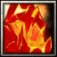

齋藤道三之長子。1548年道三打算由長子義龍為家督，但由於人心不穩，加上義龍及道三之間的關係漸惡，加上義龍一直懷疑自己是否為道三親生，道三迫於無 奈，決定讓幼子孫四郎為新家督，義龍得知後決定先下手為強，1555年義龍召孫四郎到稻葉山城，並藉機把他殺死。當時正出外打獵的道三得知後，立即回鷲山 集結三千人防守，但義龍糾結一萬大軍，以土岐正嫡的名義宣戰，並與道三方對峙。最後道三與義龍兵力相差懸殊，道三方迅速潰敗，道三首級也被義龍手下取下。 與父親一樣同為"下剋上時代"的最佳例子。 力量型近戰英雄
法術 ：Ｂ 輔助 ：Ｂ 最擅一對多人或者肉盾 力量：29+2.70（主要） 敏捷：27+2.10 智慧：23+2.00 
Ｗ[主動] 火靈令距離600內的目標附近240範圍的敵人， 降低[30/35/40/45]%移動速度並無法施法，持續6秒。 消耗法力[120/140/160/180]，等待時間[25]秒。 Ｅ[主動] 火龍吐息術 如果被攻擊的目標處於火靈纏身狀態，將會在7秒內每秒受到[40/60/90/120]點傷害。 消耗法力[100/120/140/160]，等待時間20秒。 Ｒ[被動] 體格強化 讓自身的體格更加壯健，能增加自身[4/6/8/10]點裝甲， 並降低[6/8/10/12]% 所受到的傷害。
Ｔ[主動] 火龍化身 變身成火龍，具有600遠距混沌擴散攻擊、魔法免疫、 超靈視， 增加基礎攻擊[20/30/40]點、防禦[10/15/20]點、移動速度50點 、[500/1000]點額外生命值，
持續[40/50/60]秒。
消耗法力[250/300]，等待時間165秒。 |